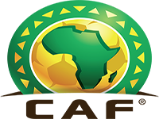
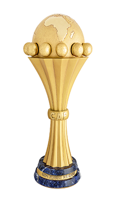

La Coupe d'Afrique des nations

La Coupe d'Afrique des nations, couramment abrégée en CAN, est la plus importante compétition internationale de football en Afrique. Elle est organisée par la Confédération africaine de football (CAF) et met aux prises les sélections nationales africaines. Cette compétition, disputée tous les deux ans, s'est déroulée pour la première fois en 1957 au Soudan.
La Coupe d'Afrique des Nations se tient tous les deux ans. Le nombre de participants à la phase finale, qui n'a cessé de croître, se chiffre à 16 depuis 1996.Le gagnant se qualifie pour la Coupe des confédérations.
Le titre de champion d'Afrique de football est détenu par le Nigeria, vainqueur de l'édition 2013. L'Égypte est la première nation africaine à avoir emporté un trophée continental trois fois de suite (victoires en finale face à la Côte d'Ivoire en 2006, face au Cameroun en 2008 et face au Ghana en 2010)2. L'Égypte est également la nation la plus titrée avec sept victoires.
À partir de 2013, la CAN continue d'avoir lieu tous les deux ans, mais elle est organisée les années impaires afin d'éviter qu'elle se dispute la même année que la Coupe du monde de football.
La Coupe d'Afrique des nations de football 2015 est la 30e édition de la Coupe d'Afrique des nations de football. Elle se déroule du 17 janvier au 8 février 2015, en Guinée équatoriale, après le désistement du Maroc. L'équipe du Nigeria de football, tenante du titre n'étant pas qualifiée, de nombreuses équipes prétendent à la victoire finale.
Le trophée

À travers l'histoire de la coupe d'Afrique des nations, trois différents trophées ont été conçus pour les vainqueurs de la compétition. Tout d'abord, le trophée original, fait en bronze, était appelé le Trophée Abdelaziz Abdallah Salem du nom du premier président de la CAF, l'Égyptien Abdelaziz Abdallah Salem. Quand le Ghana s'est emparé pour la troisième fois du titre en 1978, il a obtenu le droit de conserver pour toujours le trophée.
Un second trophée fut alors mis en jeu entre 1980 et 2000, appelé le Trophée de l'Unité africaine, il fut transmis du conseil suprême des sports d'Afrique à la CAF à partir de 1980. Y étaient inscrits les anneaux olympiques avec une carte du continent africain. Le Cameroun, en raison de sa troisième victoire de la compétition durant cette période a pu conserver définitivement le trophée en 2000.
Depuis 2001, un troisième trophée est remis en jeu à chaque édition, plaqué or, il s'agit d'une tour en haut de laquelle il y a un globe et où est incrustée l'Afrique, il a été dessiné et fabriqué en Italie par la même entreprise que pour les coupes du monde de la FIFA.
Palmarès
| Année | Pays hôte | Vainqueur | Finaliste |
|---|---|---|---|
| 2012 | Gabon/Guinée équatoriale | ||
| 2010 | Angola | ||
| 2008 | Ghana | ||
| 2006 | Égypte | ||
| 2004 | Tunisie | ||
| 2002 | Mali | ||
| 2000 | Ghana / Nigéria | ||
| 1998 | Burkina Faso | ||
| 1996 | Afrique du Sud | ||
| 1994 | Tunisie | ||
| 1992 | Sénégal | ||
| 1990 | Algérie | ||
| 1988 | Maroc | ||
| 1986 | Égypte | ||
| 1984 | Côte d'Ivoire | ||
| 1982 | Libye | ||
| 1980 | Nigéria | ||
| 1978 | Ghana | ||
| 1976 | Éthiopie | ||
| 1974 | Égypte | ||
| 1972 | Cameroun | ||
| 1970 | Soudan | ||
| 1968 | Éthiopie | ||
| 1965 | Tunisie | ||
| 1963 | Ghana | ||
| 1962 | Éthiopie | ||
| 1959 | Égypte | ||
| 1957 | Soudan |
Bilan par nation
Nation par année de victoire
| Rang | Pays | Années |
|---|---|---|
| 1 | 1957, 1959, 1986, 1998, 2006, 2008, 2010 | |
| 2 | 1963, 1965, 1978, 1982 | |
| 3 | 1984, 1988, 2000, 2002 | |
| 4 | 1980, 1994, 2013 | |
| 5 | 1968, 1974 | |
| 6 | 1992 | |
| 7 | 2012 | |
| 8 | 1970 | |
| - | 2004 | |
| 10 | 1990 | |
| 11 | 1962 | |
| - | 1976 | |
| - | 1996 | |
| 14 | 1972 | |
| 15 | ||
| 16 | ||
| - | ||
| - | ||
| - |
Bilan par nation (au moins une finale)
| Rang | Pays | Vainqueur | Finaliste | Troisième |
|---|---|---|---|---|
| 1 | 7 | 1 | 3 | |
| 2 | 4 | 4 | 1 | |
| 3 | 4 | 2 | 1 | |
| 4 | 3 | 4 | 7 | |
| 5 | 2 | 0 | 1 | |
| 6 | 1 | 2 | 4 | |
| 7 | 1 | 2 | 3 | |
| 8 | 1 | 2 | 1 | |
| - | 1 | 2 | 1 | |
| 10 | 1 | 1 | 2 | |
| 11 | 1 | 1 | 1 | |
| - | 1 | 1 | 1 | |
| - | 1 | 1 | 1 | |
| 14 | 1 | 0 | 0 | |
| 15 | 0 | 1 | 2 | |
| 16 | 0 | 1 | 0 | |
| - | 0 | 1 | 0 | |
| - | 0 | 1 | 0 | |
| - | 0 | 1 | 0 |
Classement historique des buteurs
Meilleurs buteurs par édition